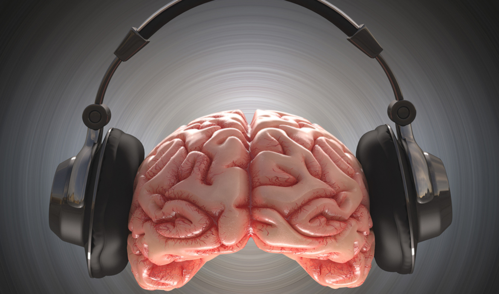
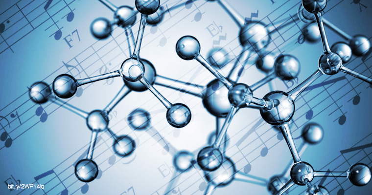

¿Puede la Musica Cambiar el Estado de Animo de una Persona?
La musica en el mundo de hoy en dia se ha vuelto parate fundamental de día a día de las personas, pero.. aprte del gusto propio, ¿estas pueden cambiar el estado de animo de una persona?
Lo que dice la neurociencia
La percepción musical es un viaje desde el oído externo hasta el cerebro. Empieza en el tímpano, donde se recogen las vibraciones del sonido y la cóclea (una estructura del oído interno) las convierte en impulsos eléctricos.
Todos distinguimos de forma intuitiva la música “triste” de la música “alegre”, ¿verdad? Esto es porque los compositores son capaces de utilizar diferentes recursos musicales para transmitir emociones. Sin embargo, la música es capaz de evocar reacciones estéticas aún más complejas y multifacéticas (difíciles de describir y muy diferentes de las emociones “cotidianas”). Estas emociones están muy influenciadas por nuestras experiencias pasadas y preferencias personales.
Lo más fascinante es que, cuanto más se parezca la emoción que nos evoca una canción a la emoción que el autor quería transmitir, mayor es el placer que experimentamos, ya que nos remite a un lazo social. Es por esta razón que podemos experimentar placer al escuchar música “triste”.
La música puede inducir cambios reales en el estado de ánimo al influir directamente en los sistemas límbico y paralímbico del cerebro, responsables del procesamiento emocional.
— Stefan Koelsch, neurocientífico, Universidad de Bergen
Beneficios

Sistema Límbico
La música activa directamente el sistema límbico, el "cerebro emocional", generando respuestas que van desde la euforia hasta la melancolía según el tempo, tono y armonía.

Sistema Límbico
La música activa directamente el sistema límbico, el "cerebro emocional", generando respuestas que van desde la euforia hasta la melancolía según el tempo, tono y armonía.
Sistema Límbico
La música activa directamente el sistema límbico, el "cerebro emocional", generando respuestas que van desde la euforia hasta la melancolía según el tempo, tono y armonía.
¿Cómo ocurre este cambio?
El proceso es más complejo que una simple reacción emocional. La música influye en el estado de ánimo a
través de tres vías principales: la vía subcortical (reacciones instintivas al ritmo y volumen), la vía
cortical (procesamiento de melodía y armonía) y la vía mnémica (asociación con memorias personales).
Esto explica por qué una misma canción puede generar alegría en una persona y tristeza en otra. El contexto
personal, la cultura y las experiencias pasadas filtran y amplifican la respuesta emocional de manera única
para cada oyente.